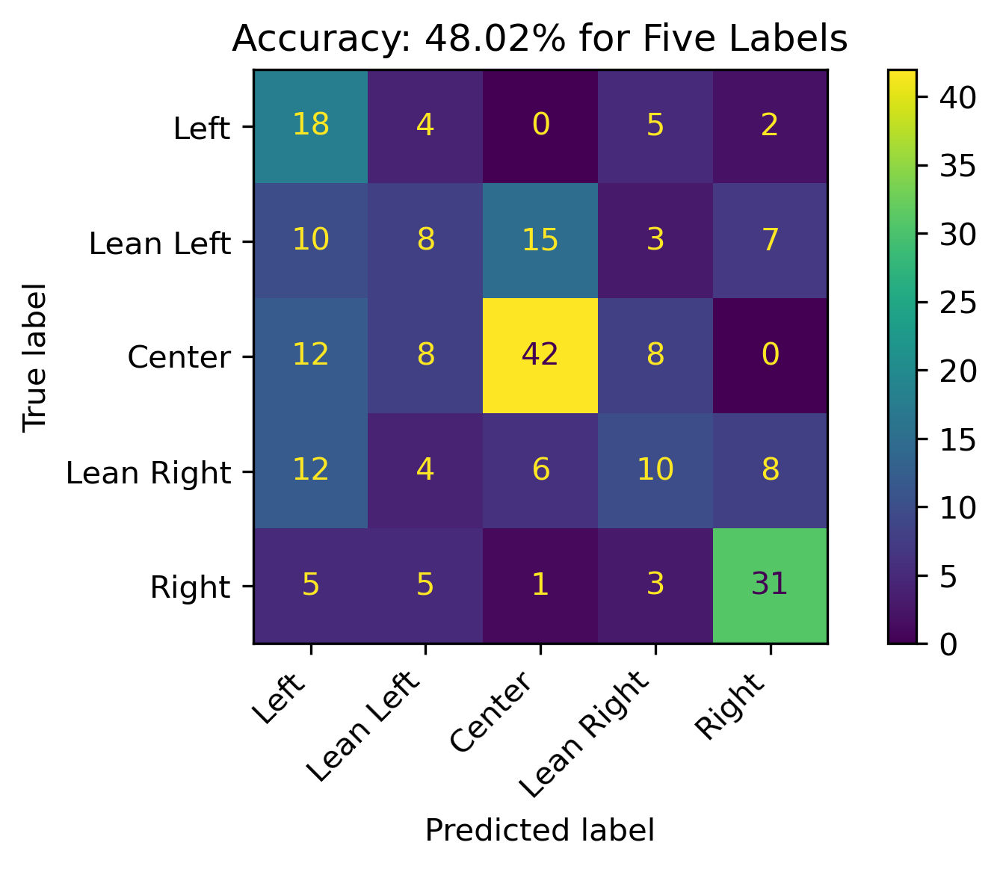
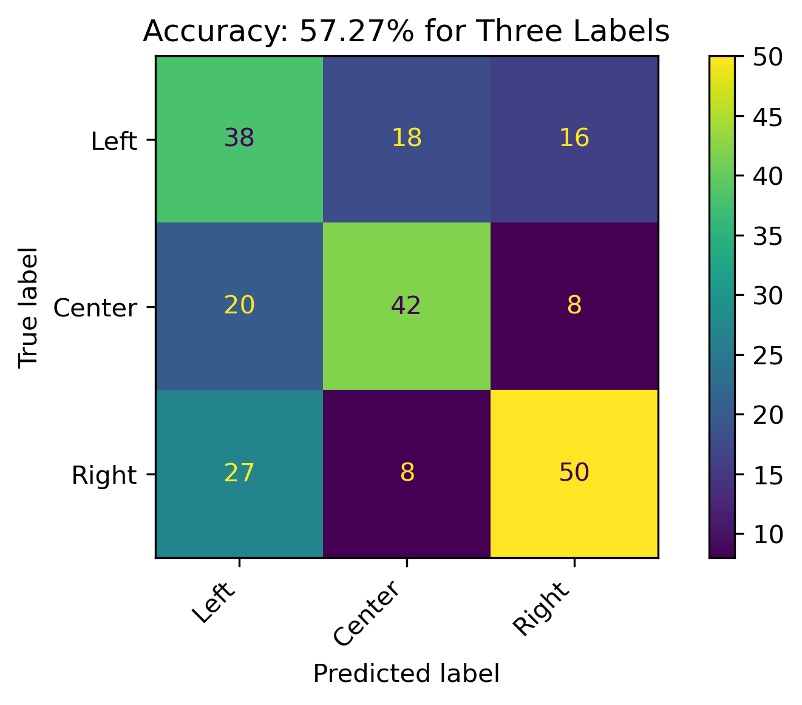
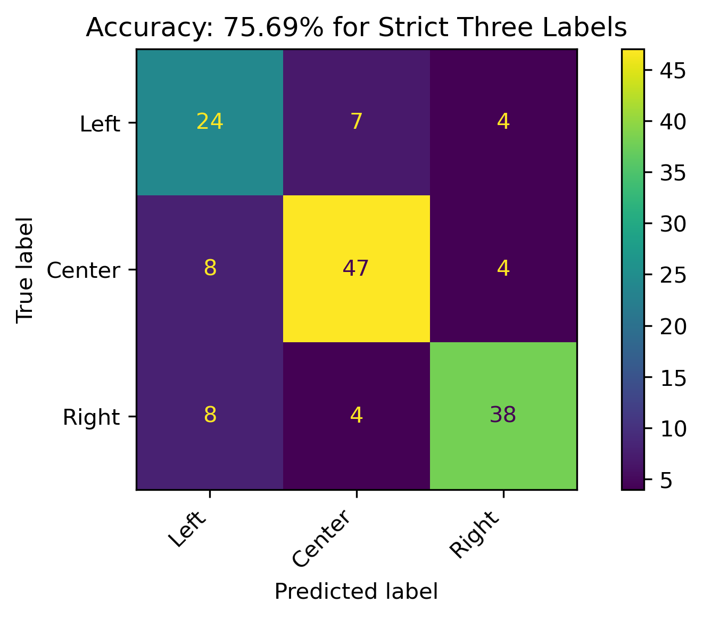
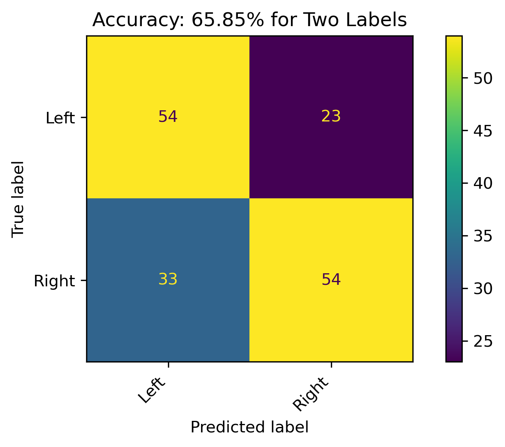
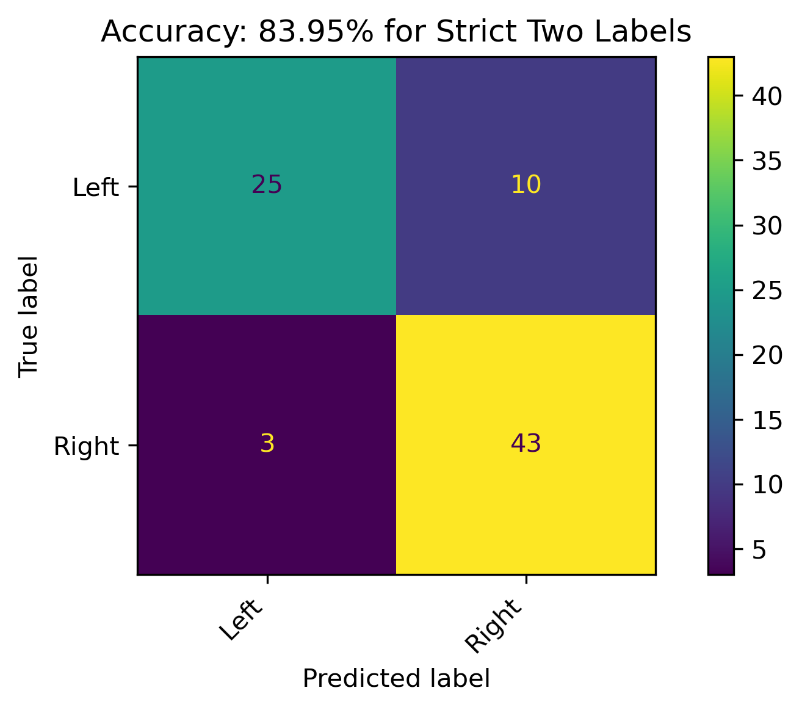
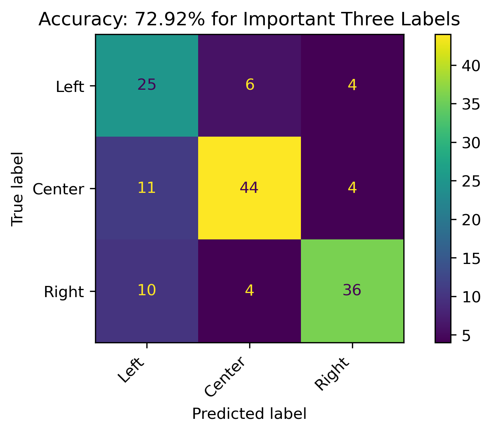
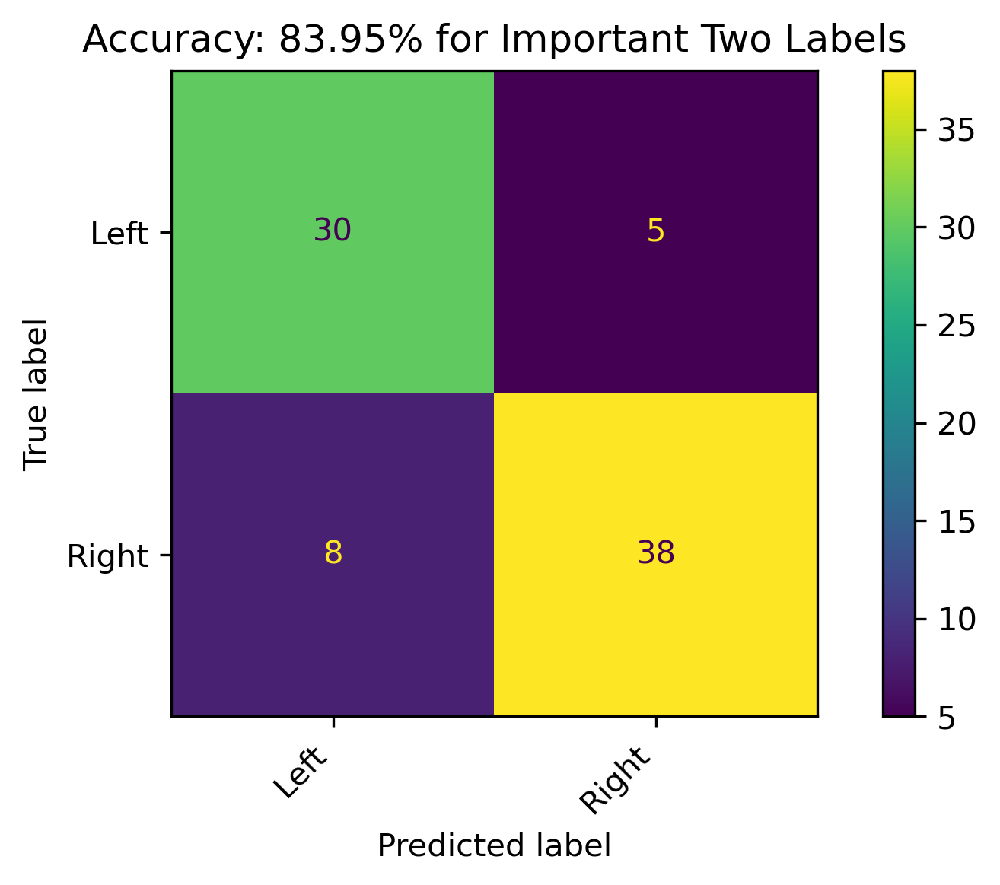

| feature | importance | absolute_importance | |
|---|---|---|---|
| Loading ITables v2.2.5 from the internet... (need help?) |
Modeling - Naive Bayes
Introduction
Naive Bayes is a generative supervised machine learning classification method. The generative aspect indicates that the model learns from the probability of the data given previous knowledge of the label. This is in comparison to a discriminative model, where the goal is to find a function which distinguishes between groups (i.e. Logistic Regression). The supervised aspect means that the model is given labels to learn from. The Naïve aspect comes from the assumption that the categories have conditional independence in order to apply the Bayes’ Theorem. This is a Naive assumption because it’s unlikely that the variables within the data have true independence. For example, consider a model built from customer reviews which is trying to classify if the review was positive or negative. The review might have language such as “happy” and “glad”, which are clearly not independent terms. However, the assumption of independence is made to allow for the calculations to work. This example is one of sentiment analysis, however there are many potential applications of this method as it is implicitly acceptable for n-class classification. For example, predicting weather a label is “true” or “false” is a 2-class problem, but Naive Bayes can extend this to multiple labels. Back to the sentiment analysis example, a review could be “positive”, “negative”, or “neutral”. Applications also include document classification, which could be used to classify an article into categories such as “politics”, “sports”, “entertainment”, among many other overall article types.
In general, Naive Bayes uses the conditional independence assumption to apply the Bayes’ Theorem. Essentially, the goal is to find the probability of a label given a datapoint. The Bayes’ Theorem is appropriate for this task and uses several components of the probabilities within the data to calculate this. Namely, the probability of the data itself occurring, the probability of the label occurring, and the conditional probability in the opposite direction (i.e. the probability of the datapoint given a label). Especially in larger datasets, some of the conditional probabilities can be zero. This presents an issue due to the multiplicative calculations required, which would zero out the entire probability. Smoothing techniques are used to account for this, with the Laplacian Correction being the most common. This technique adds 1 to each case’s count. The general smoothing technique adds a specified variable (or alpha) to the count.
This section of the analysis will specifically use Multinomial Naive Bayes Classification, which “is suitable for discrete features (e.g., word counts for text classification)” sklearn documentation.
Strategy and Goals
More specifically, Multinomial Naive Bayes will be used here to create models for predicting political bias from text data. Aftering training models with news article which have known political biases, these models will be applied to Reddit data to project political bias, which could be a decent indicator of sentiment towards student loan relief in online social discourse.
See the Modeling Preparation page for a detailed breakdown of the data fromatting, labels for supervised learning, and necessity for disjointness.
Modeling
Five Labels

The overall accuracy for testing across all five labels is 48.02%. Lean Left and Lean Right have a hard time being recognized correctly, as illustrated by the other categories being predicted almost as much as the others when that is the true label.
Three Labels

When combining Lean Left and Lean Right with Left and Right, respectively, the model accuracy increasing to 57.27%. The model has a decent performance, with predictions for the Right political bias outperforming the other prediction categories. Left performed the worse.
Strict Three Labels

When the leaning political biases weren’t combined, the accuracy of the model increased by almost 20% for the three political bias labels. Overall decent results with its best performance on Center and Right labels, respectively.
Two Labels

When combining Lean Left and Lean Right with Left and Right, respectively, and dropping the Center label, the model accuracy was 65.85%. There were still a high amount of incorrect predictions, which could be reflective on the leanings.
Strict Two Labels

When the leaning political biases weren’t combined, and dropping the the Center label, the accuracy of the model increased by almost 20% over the aggregated version of the two labels. This is a respectable model, and the best performance with the Naive Bayes classification in this section.
Reddit Projections
To apply this model in projecting political bias on Reddit authors, feature permutation was performed on the best performing 3-Class and 2-Class models to obtain the most important features from the original 1000 labels. Subsequently:
- The models were retrained on this subset of important features.
- The Reddit count vectorized data was then reduced to these feautres.
- The models were appplied to the Reddit subset.
Feature Importance through Permutation
Three Features - Strict Three Political Biases
Two Features - Strict Two Political Biases
| feature | importance | absolute_importance | |
|---|---|---|---|
| Loading ITables v2.2.5 from the internet... (need help?) |
The new Three Label Model will have 577 features and the new Two Label Model will have 280 features.
Retrained Models
The retrained models with fewer features had roughly about the same accuracy.
Three Features

Two Features

Reddit Projection Results
| Author | Predicted Bias Three | Threshold Three | Predicted Bias Two | Threshold Two | Threshold | Conclusion |
|---|---|---|---|---|---|---|
| Loading ITables v2.2.5 from the internet... (need help?) |
The above illustrates the predicions for both the three and two label models as well as their probabilities. Combining the results in the last two columns illustrates the overall political bias (including leanings). Recall that the Reddit data is unlabeled, so the probabilities act as sure the model is in predicting the political biases. Recall that political biases are correlated with sentiment, with the Right having a more negative sentiment and the Left having a more positive sentiment.
Conclusion
News articles published by organizations with known political biases were modeled in an attempt to project political bias on text content when it is unknown. Although political bias can vary between authors and news topics within a single organization, a model based on prior probabilities was used in an attempt to do this. The models were most accurate when political bias was distinctly three or two categories. The model captured patterns when political bias was either Left, Center, or Right adequately, and even better when it was just Left or Right. This was an important outcome, as the hypothesis of this overall analysis was to identify specific features which could predict political bias in an attempt to project positive and negative sentiment on the topic of Student Loan Forgiveness. Ultimately, the model was used on Reddit Authors’ combined content to analyze this sentiment on the social discourse platform. Given such a high performing model, sentiment was projected with how confident the model was on this. Although the model did perform quite well, there is one word of caution with this moving forward. The downside of this model was that it was highly confident in its decisions even when it was incorrect.
Modeling Conclusions
Please see Modeling Conclusions for a complete synthesis of the supervised machine learning models, especially concerning bias and sentiment.